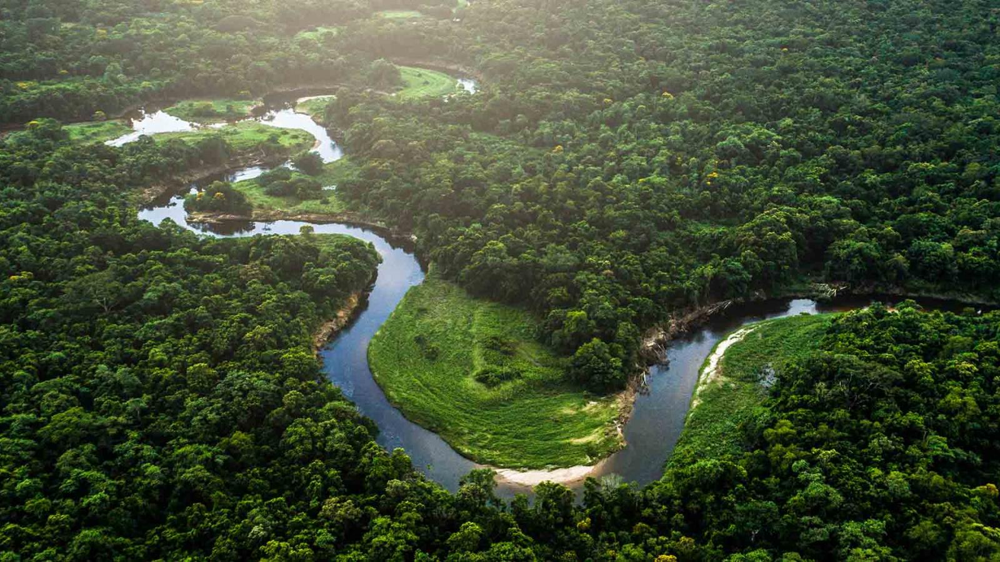
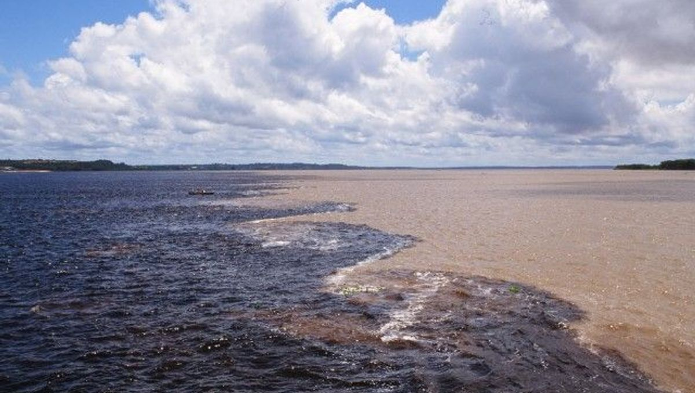
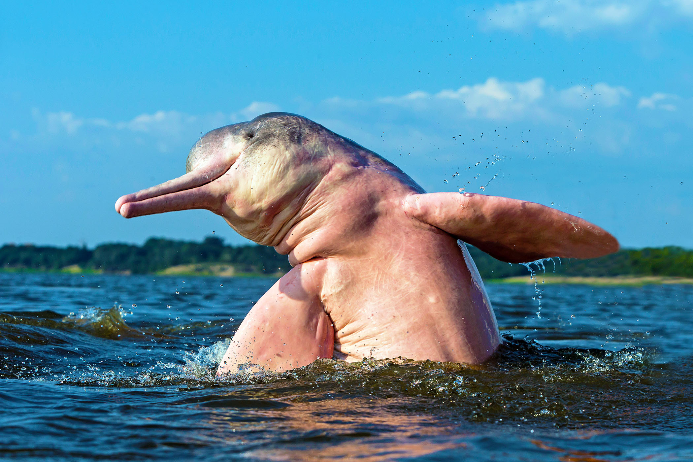

Explore Nature Like Never Before
The Amazon Rainforest is the largest tropical rainforest in the world, covering much of northwestern Brazil. It is home to an incredible variety of wildlife, plants, and indigenous cultures. The Amazon River, one of the longest rivers on Earth, flows through this vast jungle, offering opportunities for eco-tours and breathtaking adventures.
Whether you're a nature lover, a thrill seeker, or someone in search of peace, the Amazon offers something truly magical. Boat trips, jungle hikes, wildlife safaris, and overnight stays in ecolodges are unforgettable experiences waiting for you.
Top Experiences in the Amazon
- Manaus: The gateway city to the Amazon, known for the Amazonas Theater and jungle tours. Visit Manaus
- Meeting of the Waters: A unique natural phenomenon where the dark Rio Negro and the sandy Amazon River run side by side without mixing. Learn more
- Amazon Wildlife: Spot pink dolphins, jaguars, monkeys, and colorful birds in their natural habitat.
- Forest Lodges: Stay deep in the jungle in eco-lodges and connect with nature like never before.


